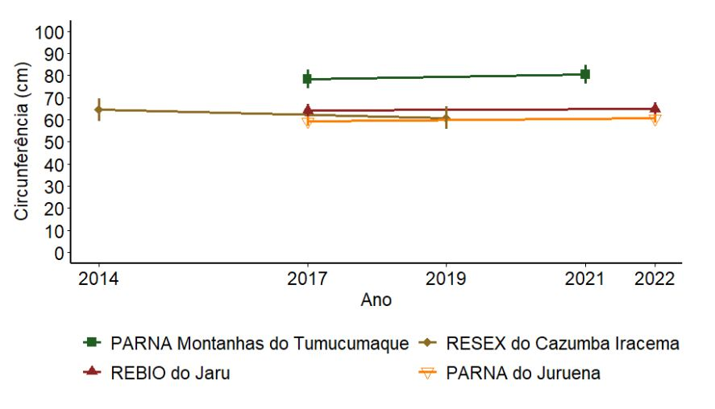

3 Plantas arbóreas e arborescentes
Alexandre Bonesso Sampaio1, Bruno Lenhaverde Sandy2, Dárlison Fernandes Carvalho de Andrade3, Flávio Amorim Obermüller4, Herison Medeiros4,5, Marina Landeiro5, Paulo Henrique Labiak6 & Rafaela Campostrini Forzza5-7
Centro Nacional de Pesquisa e Conservação da Biodiversidade do Cerrado e Restauração Ecológica - CBC
Instituto Chico Mendes de Conservação da Biodiversidade – ICMBio
Parque Nacional de Brasília
Via Epia, BR-450, Km 8,5
70635-800 Brasília, DFCoordenação de Monitoramento da Biodiversidade - COMOB
Instituto Chico Mendes de Conservação da Biodiversidade – ICMBio
Complexo Administrativo EQSW 103/104 s/n
70670-350 Brasília, DFCoordenação Geral de Informação Florestal - CGIF
Serviço Florestal Brasileiro - SFB
SCEN Lote 04 - Asa Norte
70818-900 Brasília, DFNew York Botanical Garden - Ford Project
2900 Southern Blvd
Bronx, NY 10458-5126 - USAJardim Botânico do Rio de Janeiro – JBRJ
Rua Jardim Botânico, 1008
Jardim Botânico
22460-030 Rio de Janeiro, RJ
Bolsista de produtividade do CNPq - 303059/2020-6
Cientista do Nosso Estado da FAPERJ - E‐26/200.967/2022Universidade Federal do Paraná
Departamento de Botânica
Caixa Postal 19031
81531-980 Curitiba, PR
Bolsista de produtividade do CNPq - 303330/2022-8Parque Nacional do Descobrimento
Instituto Chico Mendes de Conservação da Biodiversidade - ICMBio
Cumuruxatiba
45980-000 Prado, BA
Como citar: Sampaio, A. B.; Sandy, B. L.; Andrade, D. F. C.; Obermüller, F. A.; Medeiros, H.; Landeiro, M.; Labiak, P. H. & Forzza, R. C. Plantas arbóreas e arborescentes. In: Programa Nacional de Monitoramento da Biodiversidade – Programa Monitora, Subprograma Terrestre, Componente Florestal. Relatório 2014-2022. Instituto Chico Mendes de Conservação da Biodiversidade, Brasília, 2024. Pp: xx
O monitoramento de plantas arbóreas e arborescentes do Componente Florestal do Programa Monitora foi inicialmente concebido para prover dados e informações sobre a variação da biomassa florestal frente às mudanças do clima. Dez variáveis têm sido monitoradas a partir dos dados obtidos em campo, o que nos permite, também, avaliar a estrutura florestal e sua dinâmica ao longo do tempo, além dos efeitos indiretos do desmatamento regional (Werth & Avissar 2002). Este protocolo de monitoramento vem sendo aplicado em florestas nos biomas Amazônia, Cerrado e Mata Atlântica.
Por constituir a base da cadeia trófica, alterações na estrutura da vegetação podem implicar mudanças deletérias no habitat para a fauna, no desequilíbrio das interações ecológicas e no funcionamento dos ecossistemas (Tews et al. 2004). Da mesma forma, a perda ou alteração na abundância de organismos-chave para a saúde da floresta, como herbívoros, dispersores e polinizadores, e o aumento de pragas e doenças que atacam as plantas, podem afetar a estrutura e a dinâmica das florestas e das savanas (Wilkie et al. 2011).
Por se tratar de um protocolo que estabelece reamostragens a cada cinco anos, o processo do monitoramento para o alvo de plantas está em fase inicial e um pouco mais da metade (56,5%) das unidades de conservação (UCs) ainda não implementou o número mínimo de três unidades amostrais (UAs) a serem remedidas a cada cinco anos, conforme previsto no protocolo. Apenas quatro unidades de conservação, de um universo de 46, implementaram completamente o protocolo de plantas e disponibilizaram os dados para elaboração do presente relatório (Figura 3.1). Além dessas quatro UCs, há três UCs que possuem somente duas UAs remedidas e outras sete com apenas uma UA remedida, o que limita bastante as análises. As demais 30 UCs não tiveram remedição.
3.1 Métodos
Os dados aqui analisados foram coletados segundo os métodos anteriormente descritos (veja descrição detalhada no capítulo 2), nos quais as plantas arbóreas e arborescentes (árvores, palmeiras, lianas ou cipós, samambaias, cactos etc.) são amostradas em parcelas permanentes do tipo cruz de malta (3 UAs por UC). Os indivíduos que se enquadram nos critérios mínimos de inclusão (circunferência medida a 1,3 m do solo (CAP) >= 31 cm, em ambientes florestais; e circunferência à 30 cm do solo (CAS) >= 15 cm, em formações savânicas) são identificados com plaquetas metálicas e suas medidas de diâmetro do tronco e altura são registradas. No bioma Cerrado foram amostradas formações florestais (nos Parques Nacionais da Serra do Cipó e Serra da Bodoquena e na Estação Ecológica de Pirapitinga) e formações savânicas (na Estação Ecológica da Serra Geral do Tocantins e nos Parques Nacional de Brasília e da Chapada dos Veadeiros). Na Amazônia e Mata Atlântica foram amostradas apenas formações florestais em todas as UCs.
As variáveis consideradas nas análises, todas realizadas no ambiente R (Team 2021), foram: altura média (m), circunferência média (cm), área basal (m²/ha), densidade de indivíduos (indivíduos/ha), valor de cobertura vegetal (área basal (ha)/densidade), valor do quociente “q” de Liocourt e biomassa (Apêndice F). Cipós, samambaias e palmeiras foram amostrados, mas essas informações não foram consideradas neste relatório.
As fórmulas para o cálculo das variáveis avaliadas são apresentadas a seguir:
- Área basal em m² (calculada para cada cruz-de-malta - UA):
ab_CAP = ∑(CAP/100)^2/(4pi)
ab_CAS = ∑(CAS/100)^2/(4pi)
- Conversão da área basal para m²/ha:
ab_CAP_ha = ab_CAP2,5 ab_CAS_ha = ab_CAS2,5
- Biomassa por UA no bioma Amazônia (Higuchi et al. 1998):
Biomassa = exp (-1.754 + 2.665 * ln(D)): Para DAP <= 20 cm
Biomassa = exp (-0.151 + 2.170 * ln(D)): Para DAP >= 20 cm Carbono (C) = 0.2859 * P
Onde:
P = é a biomassa (kg)
D = é o diâmetro das árvores na altura do peito (DAP) em centímetros (cm)
- Biomassa por UA no bioma Mata Atlântica (Scolforo et al. 2008):
Biomassa = Ps = exp (-10,6409194002 + 2,1533324963 * ln(DAP) + 0,8248143766 + ln(H))
Onde:
Ps = peso seco em toneladas (ton)
DAP = diâmetro na altura do peito (cm)
H = altura (m)
- Biomassa por UA no bioma Cerrado s.s. (Rezende et al. 2006):
PS = -0.49129 + 0.02912 * (d²) * H
Onde:
Ps = peso seco em toneladas (ton)
d = diâmetro de base (cm)
H = altura (m)
- Valor do quociente “q” de Liocourt, com base na distribuição de frequência das classes ajustadas, utilizando o modelo linear de Meyer (Alves Junior et al. 2010):
ln(N) = e
β0+β1∗CC
Onde:
ln = Log normal
N = número de indivíduos por hectare. Em função do e = exponencial de β0+β1
vezes o CC = centro de classe
O valor do quociente “q” de Liocourt varia de zero a dois e é uma medida de relação entre a frequência de árvores, distribuídas em classes consecutivas de circunferência do tronco. Valores próximos de zero indicam que as árvores da floresta podem não estar se regenerando e crescendo da forma esperada, enquanto valores próximos a dois indicam que a floresta apresenta dinâmica conforme esperado para uma floresta saudável. Seguindo as diretrizes de Alves Junior et al. 2010, os indivíduos de árvores foram categorizados de acordo com as primeiras 10 classes de circunferência (classes com 10 cm de amplitude). A primeira classe representa os indivíduos com 10 a 20 cm e assim sucessivamente, até o limite superior de 110 cm.
As análises foram estruturadas de acordo com o número de UAs reamostradas em cada UC, que foi categorizada em um dos dois grupos: UCs com três UAs ou com duas UAs reamostradas ao longo do tempo. As médias são apresentadas com seus respectivos desvios-padrões. A média de cada variável medida nas três UA em cada UC foi comparada entre os anos amostrados por meio de uma ANOVA de um fator (one way) para medidas repetidas.
3.2 Resultados e Discussão
Até 2022 o Programa Monitora possuía 110 UAs de plantas (cruzes da malta) implementadas (96 na Amazônia, seis no Cerrado e três na Mata Atlântica) com 20.744 indivíduos tendo sido medidos na última amostragem realizada (Apêndice F).
3.2.1 Unidades de conservação com três UAs reamostradas
De 2014 até 2022, apenas quatro UCs amostraram três unidades amostrais (UAs) em pelo menos dois momentos, atendendo as diretrizes do protocolo do Componente Florestal do Programa Monitora: os PARNAs Montanhas do Tumucumaque e do Juruena, a REBIO do Jaru e a RESEX do Cazumbá-Iracema.
3.2.1.1 Circunferência do tronco
A circunferência média não variou entre os anos de amostragem (p < 0,05, Figura 3.2). O PARNA Montanhas do Tumucumaque apresentou os maiores valores médios de circunferência (> 80 cm - Apêndice F), enquanto o PARNA do Juruena, a REBIO Jarú e a RESEX do Cazumbá-Iracema apresentaram as menores médias (de 60 a 70 cm). As árvores com maior circunferência (> 300 cm) foram registradas na REBIO do Jarú em 2022, seguida do PARNA do Juruena (> 250 cm), PARNA Tumucumaque (> 200 cm) e, por último, na RESEX do Cazumbá-Iracema (< 200 cm) (Apêndice F). O menor porte das árvores na RESEX do Cazumbá-Iracema era esperado, pois esta UC é caracterizada por uma fitofisionomia predominante de floresta ombrófila aberta com bambu. Nesse tipo de floresta o dossel é aberto, com menos árvores de grande porte e menor densidade arbórea (Silveira 2001).

3.2.1.2 Estrutura de tamanho das árvores
O valor do quociente “q” de Liocourt, que representa a estrutura de tamanho das árvores, variou de 1,25 a 1,75 para as UCs com três UAs amostradas de 2014 a 2022 (Figura 3.3). A RESEX do Cazumbá-Iracema apresentou o maior valor médio do quociente de Liocourt (1,7). Os PARNAs Montanhas do Tumucumaque e do Juruena, juntamente com a REBIO do Jaru, apresentaram valores abaixo de 1,5. Em nenhuma UC as diferenças entre os valores do quociente “q” de Liocourt foram significativas (p > 0,05). Estes resultados indicam, com base na estrutura, que as áreas apresentam recrutamento dentro do esperado para florestas maduras e sem perturbações severas e que esta condição tem se mantido com pouca alteração ao longo do tempo.
3.2.1.3 Densidade de árvores
A densidade de árvores apresenta uma tendência de aumento ao longo do tempo na RESEX do Cazumbá-Iracema e de diminuição no PARNA Montanhas do Tumucumaque. No PARNA do Juruena e na REBIO do Jarú houve pouca variação ao longo do tempo (Figura 3.4). Apesar das variações aparentemente consideráveis entre os anos de amostragem na densidade de árvores (em diferentes UCs e UAs) para as duas primeiras UC aqui citadas, para nenhum dos casos as diferenças foram significativas (p > 0,05), devido à alta variação em cada UC.
3.2.1.4 Área basal
As maiores médias de área basal foram observadas no PARNA Montanhas do Tumucumaque (45 a 50 m2/ha) (Figura 3.5). As demais UCs apresentaram médias abaixo de 35 m²/ha. Em nenhuma UC as diferenças nos valores de área basal entre anos amostrados foram estatisticamente significativas (p > 0,05).
Em relação ao valor de cobertura, o PARNA Montanhas do Tumucumaque também apresentou as maiores médias (Figura 3.6), indicando uma floresta com maior número de árvores maiores e em menor densidade. As demais UCs apresentaram médias em torno de 0,05, indicando florestas bem diferentes daquelas encontradas no PARNA Montanhas do Tumucumaque. Nenhuma UC apresentou valores de cobertura estatisticamente diferentes entre os anos amostrados (p > 0,05).
3.2.1.5 Biomassa
O PARNA Montanhas do Tumucumaque apresentou biomassa média em torno de 450 toneladas por hectare (ton/ha) (Figura 3.7). As demais UCs apresentaram médias abaixo de 250 ton/ha. Para nenhuma das UCs as diferenças verificadas nos valores médios de biomassa entre anos foram significativas (p > 0,05).
3.2.2 Unidades de conservação com duas UAs reamostradas
No Componente Florestal do Programa Monitora três UCs com duas UAs foram reamostradas: ESEC Serra Geral do Tocantins, PARNA Serra da Bodoquena e PARNA da Serra dos Órgãos. Dada a amostragem de apenas duas UAs, não foi possível realizar testes estatísticos para essas UC. Aqui é apresentada apenas uma descrição dos resultados para cada UA reamostrada. Note ainda que os períodos de amostragem foram distintos entre as UCs e UAs, em alguns casos não atendendo o intervalo de cinco anos, como recomendado pelo protocolo.
3.2.2.1 Circunferência do tronco
As UAs nos PARNAs da Serra dos Órgãos e Bodoquena, ambas formações florestais, apresentaram os maiores valores médios de circunferência do tronco e baixa variação ao longo dos anos (Figura 3.8). Como esperado, na ESEC Serra Geral do Tocantins, com vegetação de cerrado típico, foram encontrados os menores valores de circunferência (abaixo de 40 cm), também com pequena variação entre os anos amostrados (Figura 3.8).
3.2.2.2 Estrutura de tamanho das árvores
Os maiores valores do quociente “q” de Liocourt foram encontrados no PARNA da Serra da Bodoquena. O PARNA Serra da Bodoquena e a ESEC Serra Geral do Tocantins apresentaram importante tendência de diminuição do quociente “q” de Liocourt e o PARNA da Serra dos Órgãos tendência de aumento. Porém, com apenas duas UAs não é possível avaliar se esta variação é significativa (Figura 3.9).
3.2.2.3 Densidade de árvores
Em relação à densidade das árvores (Figura 3.10), observou-se uma redução nesse parâmetro estrutural na EA1 da ESEC Serra Geral do Tocantins. Nos PARNAs Serra da Bodoquena e Serra dos Órgãos aparentemente não houve variação na densidade de árvores das UAs 1 e 2 entre os anos amostrados.
3.2.2.4 Área basal
As UAs nos PARNAs da Serra dos Órgãos e Serra da Bodoquena, ambas formações florestais, apresentaram os maiores valores de área basal e baixa variação ao longo dos anos (Figura 3.11). Como esperado, na ESEC Serra Geral do Tocantins, com vegetação de cerrado típico, foram encontrados os menores valores de área basal, também com pequena variação entre os anos amostrados (Figura 3.11), seguindo os padrões observados para a circunferência das árvores (Figura 3.8).
3.2.2.5 Valor de cobertura
As UAs nos PARNAs da Serra dos Órgãos e da Serra da Bodoquena, ambas formações florestais, apresentaram os maiores valores de cobertura (Figura 3.12). Como esperado, na ESEC Serra Geral do Tocantins, com vegetação de cerrado típico, foram encontrados os menores valores de cobertura (Figura 3.12). O valor de cobertura mostrou tendência de redução ao longo do tempo na UA 1 no PARNA da Serra dos Órgãos e aumento na UA 2 do PARNA da Serra da Bodoquena. A UA 1 do PARNA da Serra dos Órgãos mostrou aumento na densidade ao longo do tempo, o que pode ter resultado na redução do valor de cobertura. Houve um leve aumento na área basal na UA 2 do PARNA da Serra da Bodoquena, o que pode ter levado ao aumento do valor de cobertura. As variações na densidade e área basal não foram suficientes para afetar o valor de cobertura na ESEC Serra Geral do Tocantins. As diferenças aqui descritas não foram testadas estatisticamente pela falta de amostras suficientes.
3.2.2.6 Biomassa
Aparentemente, a biomassa variou ao longo dos anos no PARNA da Serra dos Órgãos, onde a UA 1 mostrou redução e a UA 2 aumento (Figura 3.13). As demais UAs nas outras duas UCs (PARNA da Serra da Bodoquena e ESEC Serra Geral do Tocantins), aparentemente, não apresentaram variação. A ESEC Serra Geral do Tocantins apresentou os menores valores de biomassa, o que é esperado pelas características de sua fitofisionomia savânica (Morandi et al. 2018), em contraste com as outras duas UCs florestais. As diferenças aqui descritas não foram testadas estatisticamente dada à insuficiência amostral.

3.2.3 Unidades amostrais remedidas de todas UCs
Ao todo foram remedidas 30 UAs em 17 UCs no período de 2014 a 2022 (Figura 3.1). Dessas, 10 tiveram apenas uma UA remedida. Pela avaliação conjunta de todas as UAs remedidas e todas as variáveis analisadas podemos observar que a maior parte apresentou pouca variação ao longo do tempo (Figura 3.14, Apêndice F). Todas as variáveis apresentaram mediana da variação percentual próxima de zero. A variável com maior variação percentual foi biomassa, associada à variação de densidade e área basal. A altura média das árvores também variou consideravelmente ao longo do tempo, mas isso pode estar relacionado também com erros de medida decorrentes do método de mensuração, que utiliza, predominantemente, estimativas visuais. Isso parece ser verdade, pois a circunferência média das árvores variou pouco ao longo do tempo e está diretamente relacionada à altura. A densidade e área basal variaram proporcionalmente em cada UC, resultando em variação muito baixa do valor de cobertura. Por fim, a estrutura de tamanho das árvores também se manteve ao longo do tempo, representada pela pequena variação do quociente “q” de Liocourt, indicando uma estabilidade na estrutura das florestas e a ausência de impactos severos nas áreas amostradas.
Apesar da maior parte das UAs amostradas apresentar baixa variação ao longo do tempo, especialmente para as variáveis valor de cobertura e quociente “q” de Liocourt, várias UAs apresentaram variações bastante consideráveis, em alguns casos chegando até a 80% (Figura 3.14, Apêndice F). A UA remedida no PARNA Superagui apresentou as maiores variações proporcionais entre as medidas realizadas (remedida após um ano) para todas as variáveis, exceto para o quociente “q” de Liocourt (Apêndice F). Apesar dessas variações ao longo do tempo chamarem a atenção e merecerem ser mais bem avaliadas, não há ainda como sabermos se são variações significativas, pois foram obtidas com menos de três UAs por UC. Para as quatro UCs com as três UAs remedidas não houve variação significativa, apesar de algumas variáveis em algumas UAs terem variado consideravelmente entre os anos medidos.
3.3 Conclusão
Os resultados obtidos indicam que para as quatro UCs em que foi possível realizar análises estatísticas, todas as variáveis avaliadas permaneceram estáveis, sugerindo que as florestas, de forma geral, se mantiveram com as mesmas características em termos de estrutura ao longo do período de monitoramento (2014-2022). Por outro lado, há variações que podem estar acontecendo, como indicado por algumas variáveis para algumas UAs e em algumas UCs, que chamam atenção e precisam ser mais bem avaliadas. Para isso será necessário completar o número de UAs, mínimo três por UC, e continuar o monitoramento. Além disso, em relação à análise teremos que estabelecer limites de variação da estrutura da vegetação para indicar um estado de alerta para uma determinada área durante o monitoramento. Isso é uma necessidade, pois os métodos estatísticos aqui usados não são a melhor forma para indicar o alerta, devido à alta variabilidade das variáveis e o baixo poder de detecção de mudanças, dado o baixo número de UAs por UCs.
Eventos climáticos cíclicos e/ou pontuais podem ter uma série de influências na estrutura dos ambientes florestais. Dentre eles podemos citar os eventos de El Niño, intensificando períodos de seca e chuva (Laurance et al. 2009; Costa et al. 2010; Vilanova et al. 2018); o aumento da concentração de CO2 e temperatura, e as tempestades de ventos (blowdown) (Nelson et al. 1994). Essas variáveis, sozinhas ou em conjunto, podem desencadear mudanças drásticas na vegetação como, por exemplo, mudanças nos períodos reprodutivos (fenologia), o favorecimento de espécies de lianas (Van der Heijden & Phillips 2009) e bambus (Castro et al. 2013), o crescimento acentuado das árvores (Pan et al. 2013) tornando-as mais susceptíveis a quedas (McDowell et al. 2018), e o aumento de pragas e espécies invasoras. Todos estes fatores podem causar variações na estrutura da vegetação.
Em relação às diferenças nos parâmetros de estrutura encontrados para as diferentes vegetações monitoradas nas UCs, estas podem ser resultado de fatores climáticos, edáficos e biogeográficos (Banin et al. 2014). As espécies de árvores variam suas respostas em termos de crescimento e acúmulo de biomassa em relação aos fatores ambientais aos quais são expostas (Banin et al. 2014). Outro fator que pode determinar as variações estruturais encontradas nas diferentes áreas de floresta na Amazônia são os eventos de incêndios pré-históricos, de 500 a 1500 anos atrás, que alteram permanentemente a capacidade de absorção de água e disponibilidade de nutrientes dos solos, e podem estar conferindo maior resiliência às florestas que se desenvolveram nessas áreas frente às secas extremas (Vedovato et al. 2023).
Florestas mais resilientes e menos susceptíveis aos impactos diretos das ações humanas têm um importante papel no sequestro e estoque de carbono (Funk et al. 2019). Os resultados do presente relatório demonstram que a estrutura das florestas monitoradas não sofreu alterações significativas ao longo do monitoramento, indicando a efetividade das unidades de conservação em proteger a biodiversidade.
De forma geral, as políticas públicas têm sido direcionadas para reduzir as taxas de desmatamentos onde o processo de degradação já está implantado e possibilitar a restauração ecológica em áreas onde as florestas já foram convertidas para outras formas de uso e ocupação do solo. Frente a este cenário, de minimização de danos e altos investimentos em restauração ecológica, é fundamental que se valorize a vegetação protegida pelas unidades de conservação. Garantir recursos suficientes para conservação e promoção do uso consciente e responsável das florestas, protegendo ainda mais estas áreas de possíveis impactos, como a extração ilegal de madeira, incêndios, e a completa remoção da vegetação para atividades de mineração ou agropecuária é imperativo no século XXI (Funk et al. 2019).
Os investimentos realizados por programas e projetos voltados à conservação da Amazônia, como, por exemplo, o Programa Áreas Protegidas da Amazônia (ARPA), que financia parte considerável das coletas de dados do Programa Monitora e outras ações de proteção das unidades de conservação da Amazônia, devem ser intensificados e expandidos para todos os biomas, como o recente Programa em implantação Áreas Protegidas da Caatinga (ARCA).
Ao planejar o futuro, é importante resgatar o histórico de implementação das coletas de dados do Componente Florestal do Programa Monitora, com estruturação iniciada em 2010 (Cronemberger et al. 2023), quando houve um entendimento de que seriam adotados os procedimentos metodológicos do Inventário Florestal Nacional (IFN) para o alvo plantas arbóreas e arborescentes. Naquela época, esperava-se que a utilização de metodologia similar permitiria a análise integrada dos dados e a busca por sinergias na gestão e nos procedimentos de amostragem nas unidades de conservação. O tempo passou e, finalmente, essa possibilidade começa a se materializar, com a iminente formalização de um Acordo de Cooperação Técnica (ACT) entre o Instituto Chico Mendes de Conservação da Biodiversidade, Serviço Florestal Brasileiro e o Jardim Botânico do Rio de Janeiro, cujo objeto é a execução de pesquisas, monitoramento, conservação e valorização da flora em UCs federais. A experiência de implementação do Monitora e do IFN trouxe aprendizados e maturidade aos processos que permitem, finalmente, a integração.
Para os próximos relatórios, sobre o alvo plantas arbóreas e arborescentes, esperamos que a aproximação com o Serviço Florestal Brasileiro nos permita buscar soluções para problemas comuns relacionados à identificação botânica das espécies e ao desenvolvimento de funcionalidades nos sistemas de gestão e análise de dados do Programa Monitora e do IFN. Com isso teremos melhores possibilidades de avaliar os resultados do monitoramento de plantas, integrando os dados dos protocolos básico e avançado e os dados do IFN, possibilitando, respostas de interesse local, regional e nacional.
3.4 Recomendações
Boas práticas para aprimorar o Programa
Consolidar a implantação do protocolo básico de plantas naquelas unidades de conservação ainda não consolidadas, de forma que todas as UCs contenham pelo menos três unidades amostrais sendo reamostradas;
Manter a continuidade das amostragens após o seu início, evitando interrupções na série temporal de 5 anos;
Ampliar a implementação do protocolo avançado e promover a capacitação de analistas ambientais, ATA e voluntários na coleta de material botânico e que essa se torne uma prática corriqueira do monitoramento, mesmo nas UC com protocolo básico. Especialmente na Amazônia, ainda há considerável desconhecimento sobre a flora e o Monitora cria a possibilidade de estarmos em campo onde não há outras iniciativas de pesquisa. Entendemos que toda oportunidade de geração de conhecimento é desejável e a coleta botânica implica pouco acréscimo de custos e esforço às expedições de campo;
Ampliar o protocolo em ambientes florestais no Cerrado e na Mata Atlântica;
Garantir que o método seja aplicado sem erros de procedimento e que o protocolo seja seguido integralmente durante todas as remedições.
3.5 Referências
Alves Junior, F. T.; R. L. C. Ferreira; J. A. A. Silva; L. C. Marangon; R. F. Costa Junior & S. O. Silva. 2010. Utilização do Quociente de Liocourt na avaliação da distribuição diamétrica em fragmentos de Floresta Ombrófila Aberta em Pernambuco. Ciencia Florestal 20:307–319.
Banin, L.; S. L. Lewis; G. Lopez-Gonzalez; T. R. Baker; C. A. Quesada; K. Chao; D. F. R. P. Burslem; R. Nilus; K. Abu Salim; H. C. Keeling; S. Tan; S. J. Davies; A. Monteagudo Mendoza; R. Vásquez; J. Lloyd; D. A. Neill; N. Pitman & O. L. Phillips. 2014. Tropical forest wood production: A cross‐continental comparison. J. Ecol. 102:1025–1037.
Castro, W.; I. Salimon; H. Medeiros; I. B. da Silva & M. Silveira. 2013. Bamboo abundance, edge effects, and tree mortality in a forest fragment in Southwestern Amazonia. Sci. For. 41:159–164.
Costa, A. C. L. da; D. Galbraith; S. Almeida; B. T. T. Portela; M. da Costa; J. de A. Silva Junior; A. P. Braga; P. H. L. de Gonçalves; A. A. R. de Oliveira; R. Fisher; O. L. Phillips; D. B. Metcalfe; P. Levy & P. Meir. 2010. Effect of 7 yr of experimental drought on vegetation dynamics and biomass storage of an eastern Amazonian rainforest. New Phytol. 187:579–591.
Cronemberger, C.; K. T. Ribeiro; R. K. Acosta; D. F. C. de Andrade; O. J. Marini-Filho; L. S. Moriga Masuda; K. Rêgo Mendes; S. S. Nienow; C. N. Marcolino Polaz; M. L. Reis; R. Sampaio; J. M. Souza & C. F. de Tóófoli. 2023. Social participation in the Brazilian National Biodiversity Monitoring Program leads to multiple socioenvironmental outcomes. Citiz. Sci. Theory Pr. 8.
Funk, J. M.; N. Aguilar-Amuchastegui; W. Baldwin-Cantello; J. Busch; E. Chuvasov; T. Evans; B. Griffin; N. Harris; M. N. Ferreira; K. Petersen; O. Phillips; M. G. Soares & R. J. A. Van der Hoff. 2019. Securing the climate benefits of stable forests. Clim. Policy 19:845–860.
Higuchi, N.; J. dos Santos; R. J. Ribeiro; L. Minette & Y. Biot. 1998. Biomassa da parte aérea da vegetação da floresta tropical úmida de terra-firme da Amazônia Brasileira. Acta Amazonica 28:153–153.
Laurance, S. G. W.; W. F. Laurance; H. E. M. Nascimento; A. Andrade; P. M. Fearnside; E. R. G. Rebello & R. Condit. 2009. Long-term variation in Amazon forest dynamics. J. Veg. Sci. 20:323–333.
McDowell, N.; C. D. Allen; K. Anderson-Teixeira; P. Brando; R. Brienen; J. Chambers; B. Christoffersen; S. Davies; C. Doughty; A. Duque; F. Espirito-Santo; R. Fisher; C. G. Fontes; D. Galbraith; D. Goodsman; C. Grossiord; H. Hartmann; J. Holm; D. J. Johnson; A. R. Kassim; M. Keller; C. Koven; L. Kueppers; T. Kumagai; Y. Malhi; S. M. McMahon; M. Mencuccini; P. Meir; P. Moorcroft; H. C. Muller-Landau; O. L. Phillips; T. Powell; C. A. Sierra; J. Sperry; J. Warren; C. Xu & X. Xu. 2018. Drivers and mechanisms of tree mortality in moist tropical forests. New Phytol. 219:851–869.
Morandi, P. S.; B. S. Marimon; B. H. Marimon-Junior; J. A. Ratter; T. R. Feldpausch; G. R. Colli; C. B. R. Munhoz; M. C. da Silva Júnior; E. de Souza Lima; R. F. Haidar; L. Arroyo; A. A. Murakami; F. de Góis A.quino; B. M. T. Walter; J. F. Ribeiro; R. Françoso; F. Elias; E. A. de Oliveira; S. M. Reis; B. de Oliveira; E. C. das Neves; D. S. Nogueira; H. S. Lima; T. P. de Carvalho; S. A. Rodrigues; D. Villarroel; J. M. Felfili & O. L. Phillips. 2018. Tree diversity and above-ground biomass in the South America Cerrado biome and their conservation implications. Biodivers. Conserv.
Nelson, B. W.; V. Kapos; J. B. Adams; W. J. Oliveira & O. P. Braun. 1994. Forest disturbance by large blowdowns in the Brazilian Amazon. Ecology 75:853–858.
Pan, Y.; R. A. Birdsey; O. L. Phillips & R. B. Jackson. 2013. The structure, distribution, and biomass of the world’s forests. Annu. Rev. Ecol. Evol. Syst. 44:593–622.
Rezende, A. V.; A. T. Vale; C. R. Sanquetta; A. Figueiredo Filho & J. M. Felfili. 2006. Comparação de modelos matemáticos para estimativa do volume, biomassa e estoque de carbono da vegetação lenhosa de um cerrado sensu stricto em Brasília, DF. Scientia Forestalis:65–76.
Scolforo, J. R.; A. L. Rufini; J. M. Mello; P. F. Trugilho; A. D. Oliveira & C. P. C. Silva. 2008. Inventário florestal de MG: Equações de volume, peso de matéria seca e carbono para diferentes fitofisionomias da flora nativa. Pages 103–114. Universidade Federal de Lavras. Lavras, MG.
Silveira, M. 2001. A floresta aberta com bambu no sudoeste da Amazônia: Padrões e processos em múltiplas escalas. Master’s thesis. Universidade de Brasília, Brasília. Brasília, DF.
Team, R. C. 2021. R: A language and environment for statistical computing. R Foundation for Statistical Computing. Vienna, Austria.
Tews, J.; U. Brose; V. Grimm; K. Tielbörger; M. C. Wichmann; M. Schwager & F. Jeltsch. 2004. Animal species diversity driven by habitat heterogeneity/diversity: The importance of keystone structures. J. Biogeogr. 31:79–92.
Van der Heijden, G. M. F. & O. L. Phillips. 2009. Liana infestation impacts tree growth in a lowland tropical moist forest. Biogeosciences 6:2217–2226.
Vedovato, L. B.; L. C. S. Carvalho; L. E. O. C. Aragão; M. Bird; O. L. Phillips; P. Alvarez; J. Barlow; D. C. Bartholomew; E. Berenguer; W. Castro; J. Ferreira; F. M. França; Y. Malhi; B. Marimon; B. H. Marimon Júnior; A. Monteagudo; E. A. Oliveira; L. O. Pereira; A. Pontes-Lopes; C. A. Quesada; C. V. J. Silva; J. E. Silva Espejo; M. Silveira & T. R. Feldpausch. 2023. Ancient fires enhance Amazon forest drought resistance. Front. For. Glob. Chang. 6.
Vilanova, E.; H. Ramı́rez-Angulo; A. Torres-Lezama; G. Aymard; L. Gámez; C. Durán; L. Hernández; R. Herrera; G. Van der Heijden; O. L. Phillips & G. J. Ettl. 2018. Environmental drivers of forest structure and stem turnover across Venezuelan tropical forests. PLoS One 13:e0198489.
Werth, D. & R. Avissar. 2002. The local and global effects of Amazon deforestation. J. Geophys. Res. 107.
Wilkie, D. S.; E. L. Bennett; C. A. Peres & A. A. Cunningham. 2011. The empty forest revisited. Ann. N. Y. Acad. Sci. 1223:120–128.